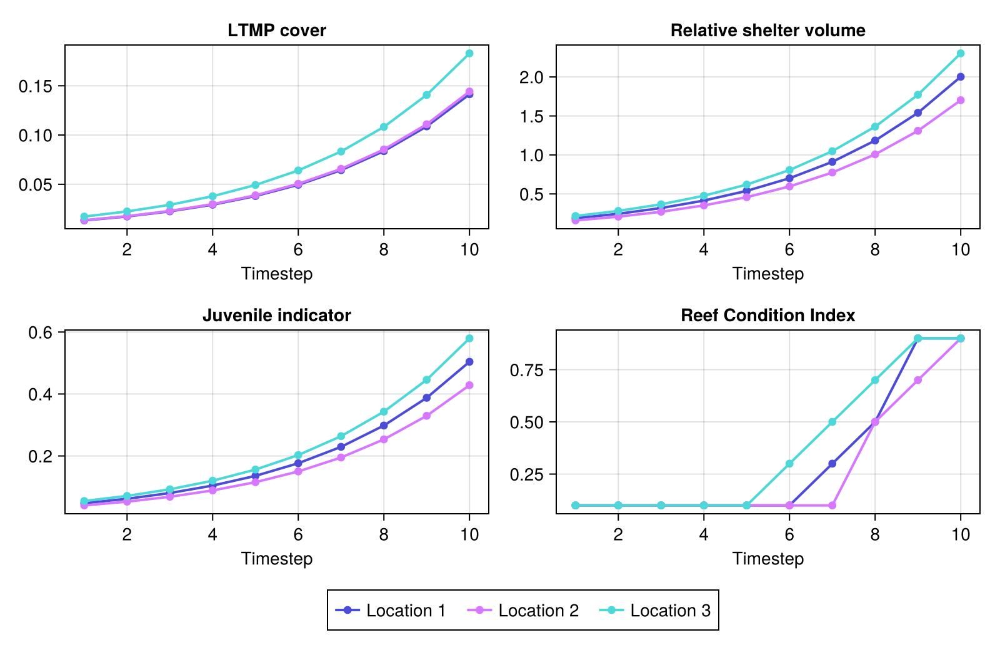

Usage
Dimension order
Array dimensions always follow the same order:
- Time
- Groups
- Sizes
- Locations
- Scenarios
Missing dimensions are dropped without changing the order of the rest. For example, a metric aggregated over groups and sizes returns [timesteps ⋅ locations].
Importing metrics
Metrics are public but not exported, so import the ones you need, or call them as ADRIAIndicators.metric(...).
import ADRIAIndicators: ltmp_cover
ltmp_cover(relative_cover, habitable_area, reef_area)
# or, without importing
using ADRIAIndicators
ADRIAIndicators.ltmp_cover(relative_cover, habitable_area, reef_area)Example: the Reef Condition Index
A typical workflow for calculating the Reef Condition Index (RCI), using synthetic arrays in place of real model outputs.
1. Model outputs and parameters
import ADRIAIndicators: ltmp_cover, relative_shelter_volume, juvenile_indicator
import ADRIAIndicators: reef_condition_index, reef_condition_index!
n_timesteps, n_groups, n_sizes, n_locations = 10, 5, 6, 3
# Coral cover relative to habitable area [timesteps ⋅ groups ⋅ sizes ⋅ locations].
# Total cover grows from 2%, split across groups, sizes and locations by weight.
total_cover = [0.02 * 1.3^(t - 1) for t in 1:n_timesteps]
size_weights = [0.02, 0.05, 0.18, 0.25, 0.30, 0.20] # [sizes]
group_weights = [0.20, 0.18, 0.22, 0.16, 0.24] # [groups]
location_weights = [1.00, 0.85, 1.15] # [locations]
relative_cover = [
total_cover[t] * size_weights[s] * group_weights[g] * location_weights[l]
for t in 1:n_timesteps, g in 1:n_groups, s in 1:n_sizes, l in 1:n_locations
]
# Habitable area in m² [locations]
habitable_area = [1.0e5, 2.0e5, 1.5e5]
# Total reef area in m², which may include non-habitable area [locations]
reef_area = [1.5e5, 2.5e5, 2.0e5]
# Which group and size class combinations are juvenile [groups ⋅ sizes].
# Here, the first two size classes, for every group.
is_juvenile = repeat([true, true, false, false, false, false]', n_groups, 1)
# Mean colony diameter in cm [groups ⋅ sizes]
mean_colony_diameters = repeat([2.5, 5.0, 10.0, 15.0, 20.0, 25.0]', n_groups, 1)
# Parameters of the log-log planar area model of [Urbina-Barreto et al. 2021],
# with dimensions [groups ⋅ sizes ⋅ (intercept, coefficient)].
planar_area_params = zeros(Float64, n_groups, n_sizes, 2)
planar_area_params[:, :, 1] .= -8.31 # intercept
planar_area_params[:, :, 2] .= 2.47 # coefficient
# Maximum possible juvenile density (individuals/m²)
max_juv_density = 15.0
size(relative_cover)(10, 5, 6, 3)2. Intermediate metrics
# (a) LTMP cover [timesteps ⋅ locations]
cover = ltmp_cover(relative_cover, habitable_area, reef_area)
round.(cover; digits=3)10×3 Matrix{Float64}:
0.013 0.014 0.017
0.017 0.018 0.022
0.023 0.023 0.029
0.029 0.03 0.038
0.038 0.039 0.049
0.05 0.05 0.064
0.064 0.066 0.083
0.084 0.085 0.108
0.109 0.111 0.141
0.141 0.144 0.183# (b) Relative shelter volume, aggregated over groups and sizes to
# [timesteps ⋅ locations]. The reference parameterisation defines the maximum
# shelter volume, assuming one reference colony per m².
reference = (25.0, -8.31, 2.47) # (mean diameter cm, intercept, coefficient)
shelter_volume_4d = relative_shelter_volume(
relative_cover, mean_colony_diameters, planar_area_params, habitable_area, reference
)
shelter_volume = dropdims(sum(shelter_volume_4d; dims=(2, 3)); dims=(2, 3))
round.(shelter_volume; digits=3)10×3 Matrix{Float64}:
0.189 0.16 0.217
0.245 0.209 0.282
0.319 0.271 0.367
0.415 0.353 0.477
0.539 0.458 0.62
0.701 0.596 0.806
0.911 0.775 1.048
1.185 1.007 1.362
1.54 1.309 1.771
2.002 1.702 2.303# (c) Juvenile indicator [timesteps ⋅ locations].
# Colony diameters are expected in m here, hence the conversion from cm.
juveniles = juvenile_indicator(
relative_cover,
is_juvenile,
habitable_area,
mean_colony_diameters ./ 100,
max_juv_density
)
round.(juveniles; digits=3)10×3 Matrix{Float64}:
0.048 0.04 0.055
0.062 0.053 0.071
0.08 0.068 0.092
0.104 0.089 0.12
0.136 0.115 0.156
0.176 0.15 0.203
0.229 0.195 0.264
0.298 0.254 0.343
0.388 0.33 0.446
0.504 0.428 0.583. The Reef Condition Index
The RCI is categorical: one of five values from 0.1 ("very poor") to 0.9 ("very good") per timestep and location.
rci = reef_condition_index(cover, shelter_volume, juveniles)10×3 Matrix{Float64}:
0.1 0.1 0.1
0.1 0.1 0.1
0.1 0.1 0.1
0.1 0.1 0.1
0.1 0.1 0.1
0.1 0.1 0.3
0.3 0.1 0.5
0.5 0.5 0.7
0.9 0.7 0.9
0.9 0.9 0.9Every metric also has an in-place version (ending in !) taking a pre-allocated output array, for cases where memory is not managed by the Julia runtime, such as wrappers for other languages.
out_rci = zeros(Float64, n_timesteps, n_locations)
reef_condition_index!(cover, shelter_volume, juveniles, out_rci)
out_rci == rcitrue4. Plotting the results
Any Julia plotting package can be used; Makie.jl is shown here.
using CairoMakie
indicators = [
"LTMP cover" => cover,
"Relative shelter volume" => shelter_volume,
"Juvenile indicator" => juveniles,
"Reef Condition Index" => rci
]
fig = Figure(; size=(800, 520))
for (i, (name, data)) in enumerate(indicators)
ax = Axis(fig[fld(i - 1, 2) + 1, mod(i - 1, 2) + 1]; title=name, xlabel="Timestep")
series!(
ax, 1:n_timesteps, permutedims(data);
marker=:circle, labels=["Location $l" for l in 1:n_locations]
)
end
Legend(fig[3, 1:2], contents(fig[1, 1])[1]; orientation=:horizontal)
fig